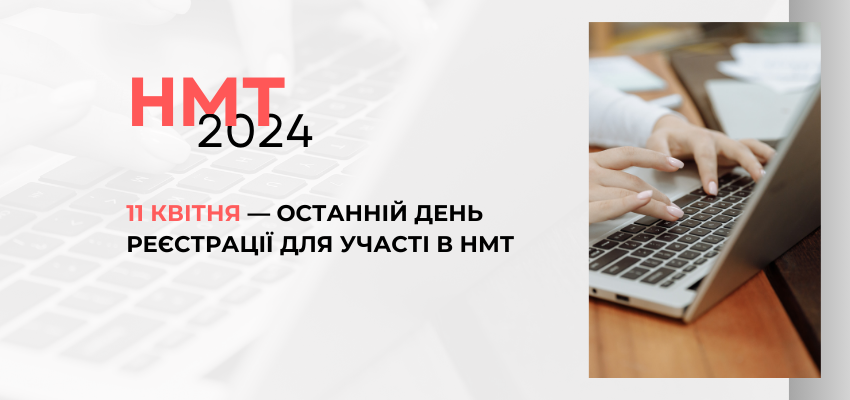
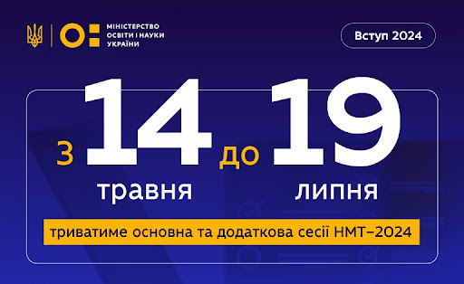
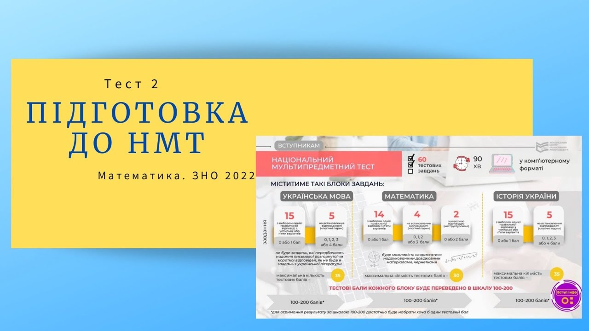
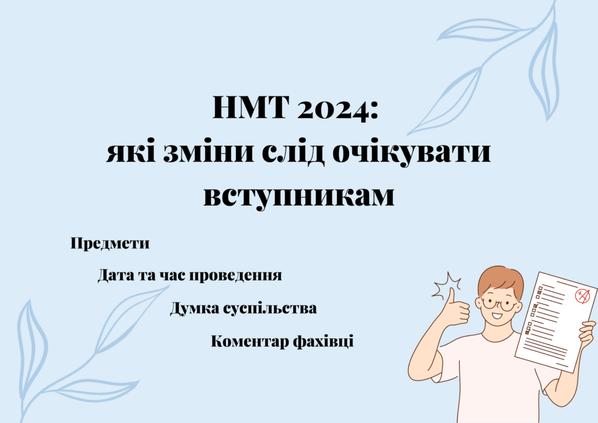
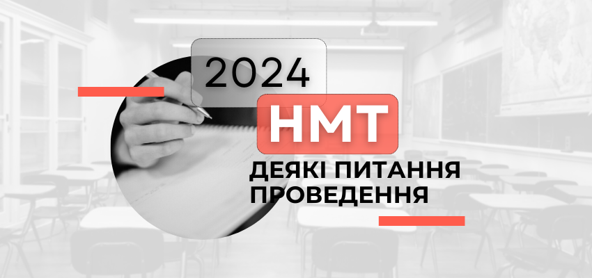
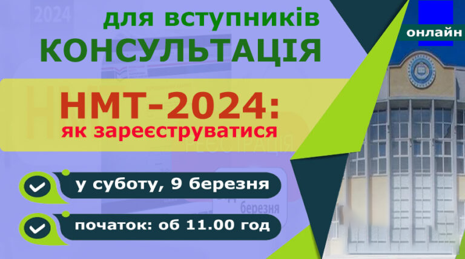
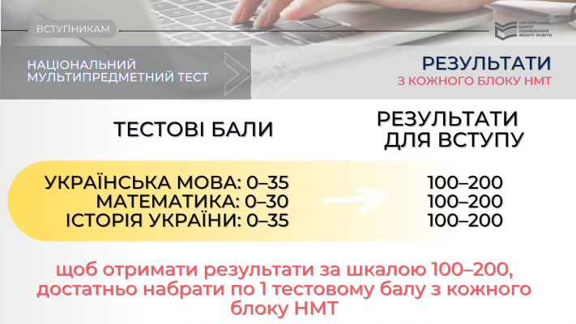
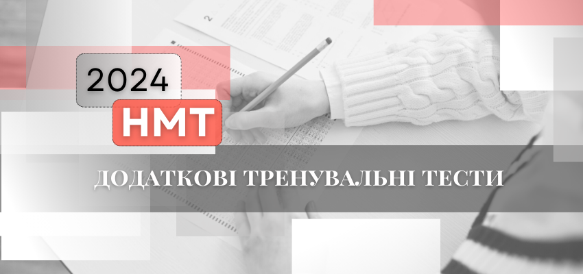

Новини НМТ 2024: Оновлення та Важливі Аспекти

Дата початку реєстрації: Реєстрація на НМТ 2024 розпочнеться 1 лютого 2024 року. Учні зможуть зареєструватися онлайн через офіційний сайт Українського центру оцінювання якості освіти (УЦОЯО).

Терміни проведення іспиту: Основна сесія НМТ 2024 відбудеться з 22 травня по 14 червня 2024 року. Додаткова сесія для тих, хто не зміг взяти участь в основній, пройде з 25 червня по 10 липня 2024 року.

Зміни в структурі тесту: У 2024 році до НМТ включені оновлені завдання з української мови, які більше фокусуються на практичних навичках письма та аналізу тексту. Зміни також торкнулись математики, де з'явилися нові типи задач.

Електронні матеріали для підготовки: УЦОЯО випустив новий комплект електронних матеріалів для підготовки до НМТ 2024, який включає інтерактивні тести та відеоуроки. Ці матеріали доступні на офіційному сайті УЦОЯО.

Підтримка учнів з особливими потребами: У 2024 році збільшена кількість центрів для складання НМТ, обладнаних для учнів з особливими освітніми потребами, що забезпечить доступність тестування для всіх категорій учнів.

Покращена система оцінювання: Введено нову систему оцінювання, яка враховує не тільки правильність відповідей, але й складність завдань, що дозволяє точніше оцінити знання та навички учнів.
Безпека іспитів: Посилено заходи безпеки для запобігання випадкам шахрайства. Усі іспитові центри будуть обладнані відеокамерами, а учні проходитимуть додаткову перевірку особистості.

Онлайн-консультації: Вперше запроваджені регулярні онлайн-консультації з викладачами, які допоможуть учням підготуватися до НМТ. Консультації проводитимуться на офіційному порталі УЦОЯО.

Зменшення кількості тестових центрів у великих містах: З метою оптимізації процесу тестування, кількість тестових центрів у великих містах зменшено. Замість цього, зросла кількість центрів у сільській місцевості та маленьких містах.
Інформаційна підтримка: УЦОЯО запустив нову інформаційну кампанію з підготовки до НМТ 2024, яка включає рекламні ролики, вебінари, та спеціальні випуски на телебаченні, щоб проінформувати учнів та їхніх батьків про всі аспекти підготовки та проведення тесту.